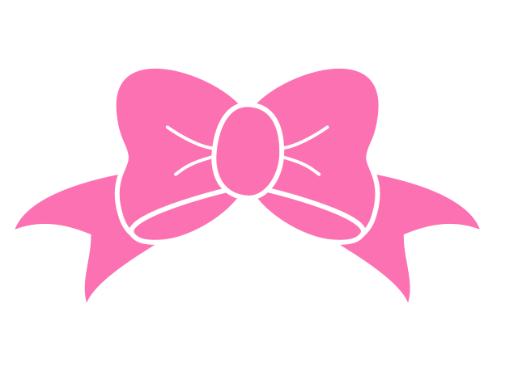

in the closet is a passion project started by a simple Englishist in Chicago. Inspired by an English Composition professor who taught a themed class on horror, I've spent entirely too many hours examining horror media (films, games, and books) from the perspective of queer literary criticism.
The blog was inspired by a college-level course, but the goal is to write about the complicated relationship between queer culture and horror in ways that can make sense to anyone.
The blog was inspired by a college-level course, but the goal is to write about the complicated relationship between queer culture and horror in ways that can make sense to anyone.